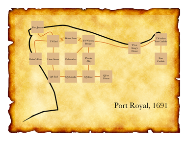

Recipe Book
13. Testing and Publishing
RB §13.1. Testing
There are no recipes for testing, alas, although most experienced IF authors have their preferred ways of going about it. Briefly: the best advice is to build and maintain a Skein which holds complete play-throughs of the piece, so that it is easy to check with a single click that all is still well; to have beta-testers who play through (substantial) drafts and send back their transcripts of play, along with suggestions; and to listen to these suggestions, and treat the beta-testers as editors rather than galley slaves.
Alpha ★ shows a way to gracefully accept beta-testers' annotations without advancing time in the story.
Most large works of IF have historically provided secret commands for testing and debugging - commands removed (or sometimes accidentally not) in the final released product. Inform does this automatically: the commands SHOWME, ACTIONS and SCENES are always present except in a released story file. It also allows us to write passages of source text which apply only for the testing phase, so that we can define new testing commands, or other checks that all is well: Bic ★ demonstrates this, and is also useful in its own right.
Examples
3. Bic ★
It may occasionally be useful to check whether all objects in our game have a given property. Here we have a "not for release" section that will run at the start of the game and alert us to any objects lacking description:
 "Bic"
"Bic"
Section 1 - Testing descriptions - Not for release
When play begins (this is the run property checks at the start of play rule):
repeat with item running through things:
if description of the item is "":
say "[item] has no description."
Section 2 - Story
The Staff Break Room is a room.
The player carries an orange, a Bic pen, and a napkin. The description of the orange is "It's a small hard pinch-skinned thing from the lunch room, probably with lots of pips and no juice."
The description of the napkin is "Slightly crumpled."
414. Alpha ★
Sometimes we want to let testers of a game insert their own comments during a transcript, without those comments wasting turns of the game or producing lengthy or inappropriate parser errors. Many testers have a habit of prefacing comments with a punctuation mark, so let's say that we'd like to catch any command that starts with any punctuation at all:
"Alpha"
When play begins:
say "Hi, Larry! Thanks for testing my game!!"
Unimplemented Room is a room. "Room description goes here..."
The scary troll is a man in Unimplemented Room.
After reading a command (this is the ignore beta-comments rule):
if the player's command matches the regular expression "^\p":
say "(Noted.)";
reject the player's command.
Test me with "x me / x troll / !this game is a bit dull so far / kiss troll / ? does this troll do anything? / :yawn".
RB §13.2. Publishing
These three examples simply show what can be done using Inform's EPS-format map output, if one is willing to tweak the design in some vector-art program. Unfortunately, at present, there are few alternatives to Adobe Illustrator - a superb but very expensive program - in the field of EPS editing, and indeed, of vector art generally: this is especially the case for Windows users. Inkscape is a usable free alternative, but it needs to have EPS files translated to PDFs before they can be used. On Mac OS X, the built-in Preview application can do this; otherwise the open-source Ghostscript might be used, but it can be a pain to install. Still, for the IF author who does have EPS editing facilities available, Inform will play nicely with them.
Examples
446. Port Royal 5 ★
"1691"
Fort James is a room.
Thames Street End is south of Fort James.
Lime Street is south of Thames Street End. West of Thames Street End is north of Fisher's Row. The description of Fisher's Row is "A waterfront street that runs south towards Chocolata Hole, where the small craft are harboured. It also continues north around the tip of the peninsula from here, turning into the east-west Thames Street."
Water Lane is east of Thames Street End.
East of Water Lane is a room called Thames Street at the Wherry Bridge. Thames Street at the Wherry Bridge has the description "To the southwest is the fishmarket; directly across the street is the entrance to a private alley through a brick archway."
The Fishmarket is southwest of Thames Street at the Wherry Bridge.
The Private Alley is south of Thames Street at the Wherry Bridge.
Thames Street by the King's House is east of Thames Street at the Wherry Bridge.
Thames Street before Fort Carlisle is east of Thames Street by the King's House.
South of Thames Street before Fort Carlisle is a room called Fort Carlisle. The description of Fort Carlisle is "Handsomely arrayed with cannons which you could fire at any moment -- though of course there are ships at dock which might be in the way."
Queen Street End is south of Lime Street.
Queen Street Middle is east of Queen Street End.
Queen Street East is east of Queen Street Middle and south of Private Alley.
Queen Street at the Prison is east of Queen Street East.
Index map with an EPS file and
Fisher's Row mapped southwest of Thames Street End,
room-size set to 50 and room-name-size set to 10,
room-name-length set to 15,
route-thickness set to 2,
room-outline set to off,
map-outline set to off,
route-colour set to "Chocolate",
room-colour set to "Burly Wood",
title set to "Port Royal, 1691",
font set to "Baskerville",
room-offset of Thames Street by the King's House set to 160&-40,
room-offset of Thames Street before Fort Carlisle set to 210&10,
room-offset of Fort Carlisle set to 210&0,
room-offset of Fort James set to -90&-20,
room-offset of Water Lane set to 0&20,
room-offset of Queen Street End set to 5&0.
This sentence has become a long catalogue of specifications. To break it down: we disambiguate the placement of Thames Street End, which otherwise is hard to locate because the directions to and from the room are not symmetrical. Then we apply some general rules about size, font, and color. Finally, we add instructions about offsetting the room locations of a few specific rooms.
This last part is a bit finicky and will not be necessary in many cases, but our goal this time is to create a map diagram that can be superimposed on the real coastal outline of Port Royal at the time. With a bit of editing, the result looks like this:

447. Bay Leaves and Honey Wine ★
The map-maker can be used in quite versatile ways, in short; though the default is a schematic line-and-box affair, that is hardly the only option. While the EPS created is not always the result of our dreams, Inform usually can be made to do most of the hard and boring part, leaving the author to do only a bit of aesthetic touchup.
In many previous examples, we have sent hapless deities wandering around a map of Greece; we might like to chart that for ourselves, in a semi-realistic fashion. So:
"Bay Leaves and Honey Wine"
Corinth is a room. Athens is east of Corinth. Epidaurus is southeast of Corinth and east of Mycenae. Mycenae is south of Corinth. Olympia is west of Mycenae. Argos is south of Mycenae. Thebes is northwest of Athens. Pylos is south of Olympia. Sparta is east of Pylos and south of Argos. Delphi is northwest of Thebes.
Index map with an EPS file and
room-size set to 8,
map-outline set to off,
room-name-offset set to 40&-40,
room-outline set to off,
room-colour set to "White",
route-colour set to "White",
room-name-colour set to "White",
room-name-length set to 25,
room-shape set to "circle".
This produces a line-and-dot map, where the names of rooms do not appear inside the city-circles, but rather (thanks to "room-name-offset") off to one side. We specify a long room-name-length because we want all the names of the cities spelled out in full; and we make all the elements white because we intend to place them over a black background layer.
We can then superimpose this on a vector map of Greece and tweak the exact positions of cities a little by hand (in Adobe Illustrator, as it happens, but other programs would also allow this level of editing). The result:

448. Baedeker ★
If our map is largely or entirely set inside a single building, we might want to produce something that resembles a floorplan. It's possible to do this with a little tweaking, like so:
"Baedeker"
Dome is a room. North of Dome is North Chapel. South of the Dome is South Chapel. West of the Dome is Western End. Quiet Corner is northwest of the Dome, north of Western End, and west of North Chapel. Loud Corner is east of North Chapel, northeast of Dome, and north of Eastern End. Eastern End is north of Dim Corner and east of Dome. Dim Corner is southeast of Dome and east of South Chapel. Ruined Corner is southwest of Dome, west of South Chapel, and south of Western End.
The church door is east of Eastern End and west of the Courtyard. The church door is a door.
Index map with
room-shape set to "square" and
room-size set to 60 and
room-name-size set to 9 and
room-name-length set to 13 and
route-thickness set to 20 and
room-outline set to off and
map-outline set to off and
route-colour set to "White" and
room-colour set to "White" and
room-shape of Dome set to "circle" and
room-size of Dome set to 80 and
EPS file.
Now we have a map made of white lines and boxes over a white background, which is not very exciting. If, however, we put a layer of black under this and slightly adjust the room shapes (using an image editor such as Adobe Illustrator), we can produce something that plausibly resembles a floorplan or museum map, like so: